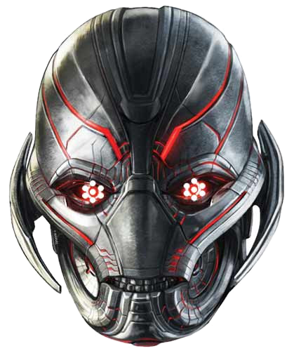

Voice Presence
AWAITING MIC
Optical Sensor
STANDBY
CLICK TO ENGAGE CAMERA
Host Telemetry
Detecting...
CPU LOAD
0%
MEMORY
0 / 0 GB (0%)
ROOT DISK
0 / 0 GB (0%)
Top Processes
NAME
RAM %
AVATAR MATRIX // FULL STAGE
CORE ACTIVE // STANDBY

ULTRON // PRIME ARTIFICIAL SENTIENCE
SYNTHESIS: FENRIR 24KHZ PCM // ADAPTIVE REASONING
PARALLAX: 3D HEAD TRACKING [ACTIVE]
STATUS: FULL OPERATIONAL
LATEST:
Ultron command matrix online and ready.
System Execution Logs
System matrix active. Monitoring host vitals.